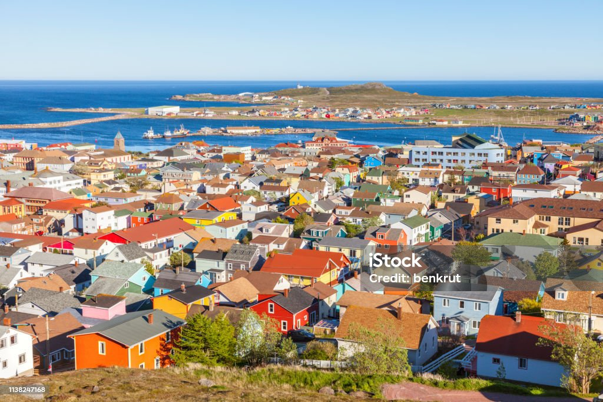

サンピエール島は北大西洋に位置し、カナダのニューファンドランド・ラブラドール州の一部です。

気候は冷涼で湿度の高い海洋性気候であり、自然環境は内陸部は主に泥炭質の湿原、潟湖、針葉樹主体の希少な森林地帯となっているのが特徴です。
優勢な宗教はカトリック教会で、島民のほとんどを占めている
サンピエール島は北大西洋に位置し、カナダのニューファンドランド・ラブラドール州の一部です。
気候は冷涼で湿度の高い海洋性気候であり、自然環境は内陸部は主に泥炭質の湿原、潟湖、針葉樹主体の希少な森林地帯となっているのが特徴です。
優勢な宗教はカトリック教会で、島民のほとんどを占めている
ミクロン島はサンピエール島・ミクロン島を構成する島の1つ。北から南にかけ、ル・カップ、グランド・ミクロン、ラングラードの各半島が陸繋砂州でつながっており、海面変動が堆積物に与えた影響により、時間の経過とともに多かれ少なかれ安定した海岸線が形成されているのが特徴です。
環境保護や地域振興などの取り組みが行われています。
きれいなビーチを守るのにおいてとても大切な行いです。
ポイ捨てしなければビーチはきれいで観光客は迷惑しないし環境問題にもならないのに...
| 項目 | サンピエール島 | ミクロン島 |
|---|---|---|
| 位置 | 北大西洋、カナダのニューファンドランド島沖に位置 | 太平洋、ミクロネシア連邦に属する島 |
| 地理的特徴 | 活火山による起伏のある地形、山岳地帯が特徴 | 珊瑚礁に囲まれた環礁、平坦で低い地形 |
| 言語 | フランス語が公用語 | 英語と地元のミクロネシア語が主な言語 |
| 文化 | フランス文化の影響が強く、伝統的な漁業が主要産業 | ポリネシアの影響があり、伝統的な航海と漁が文化の中心 |
| 経済 | 主に漁業と観光が主要産業 | 主に農業（コプラの生産）と観光が主要産業 |
| 政治的地位 | フランスの海外領土であり、特別自治権を持つ | ミクロネシア連邦に属し、自立した国としての地位を持つ |
| 観光名所 | ヴォルカン博物館、ジャコメット砦、自然保護区など | ナンマドル（首都）、歴史的な遺跡、ダイビングスポットなど |
また、「サンピエール島・ミクロン島からの迷惑電話」というのも見受けられますが、もしあなたにかかってきていてもむやみに出ないようにしてくださいね。